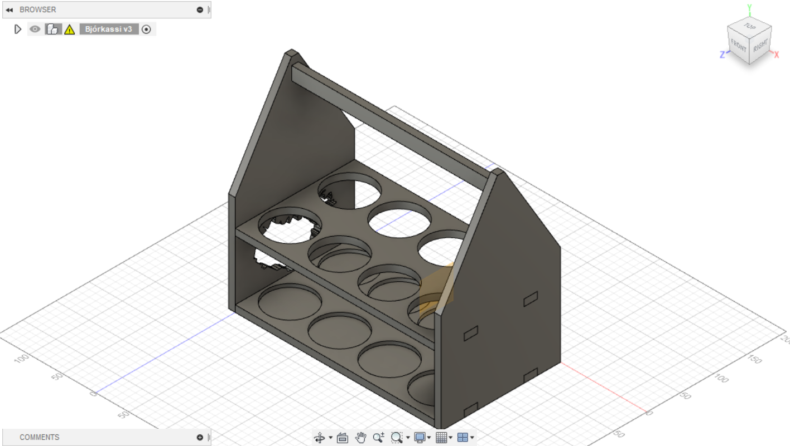
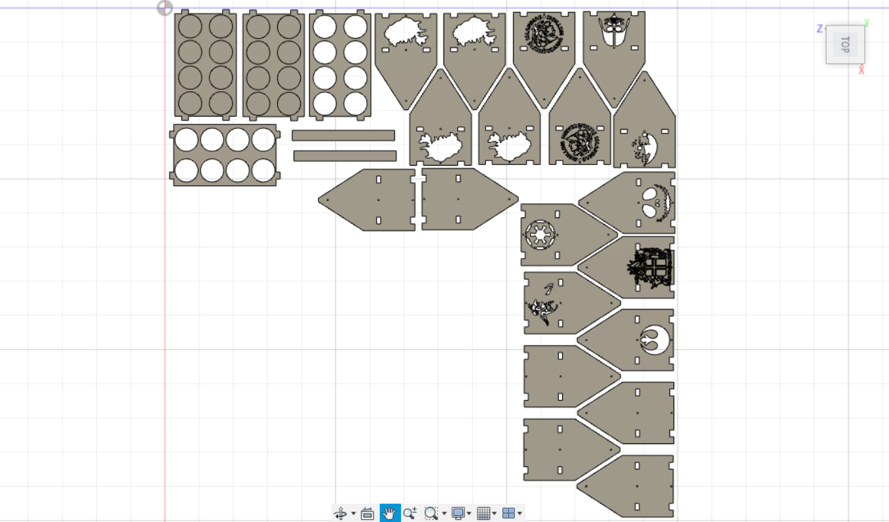
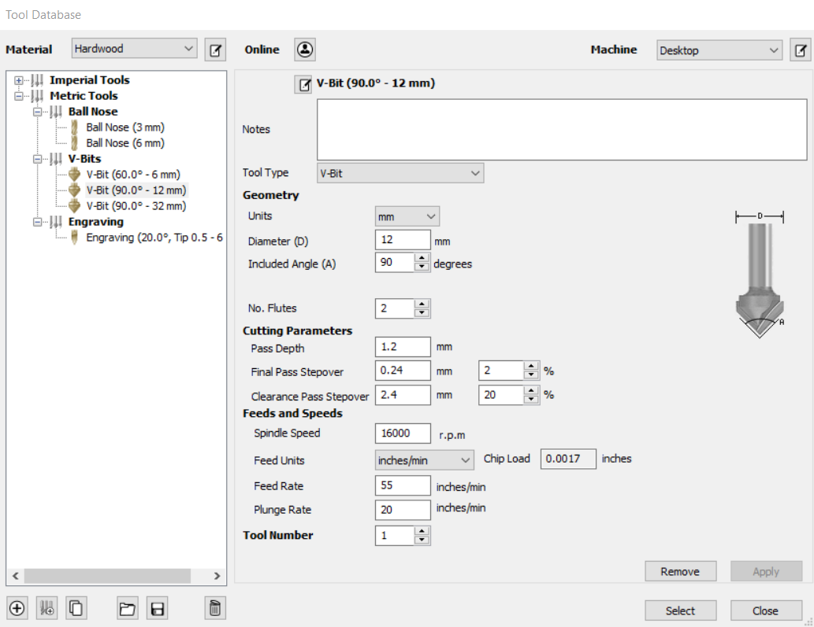
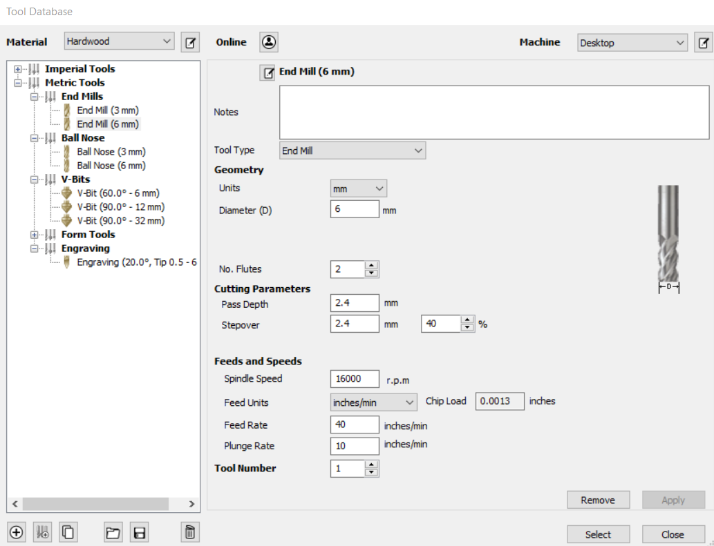
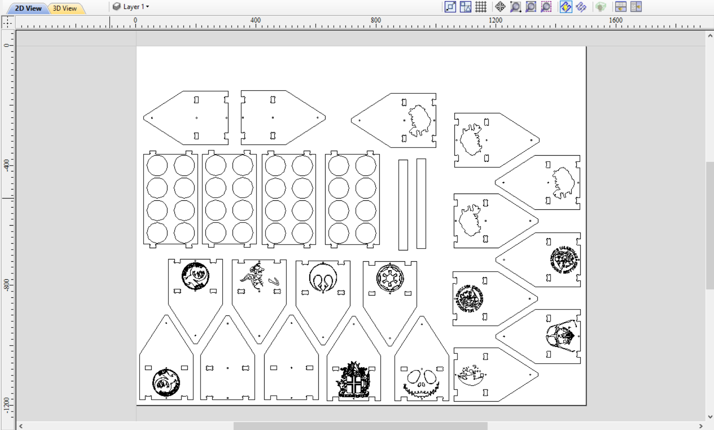
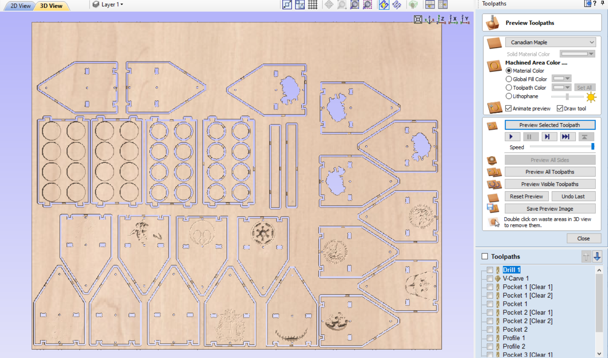
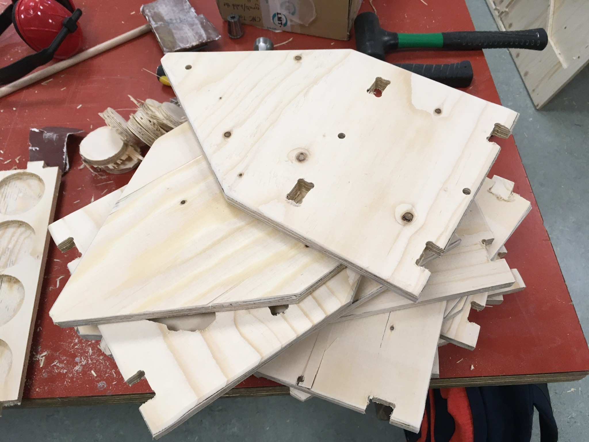
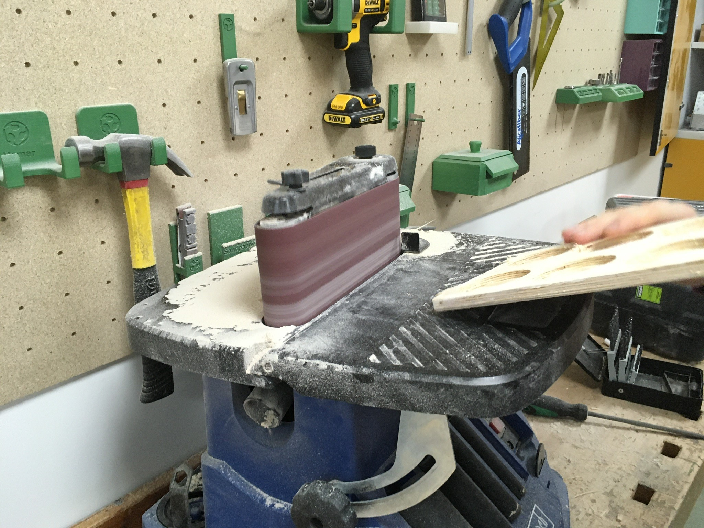
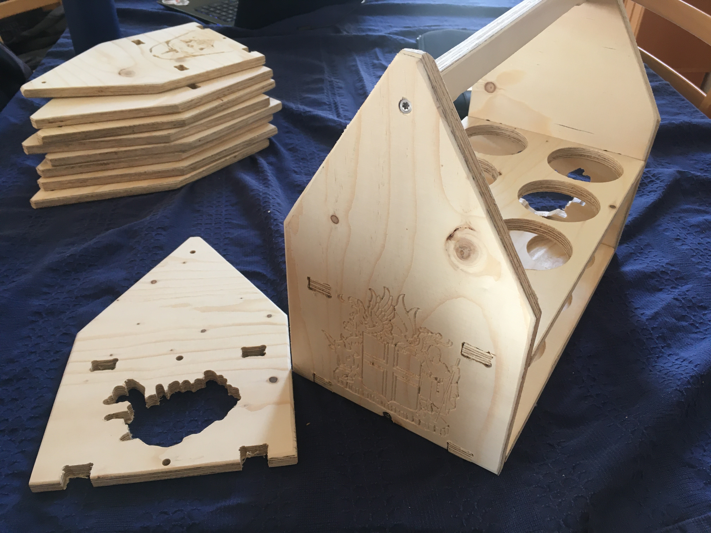

Þorsteinn Jónsson
Bjórkassi
Bjórkassi framleiddur með hjálp Shopbot fræsara
Um verkefnið
Verkefnislýsingin var svohljóðandi:
Hannið, teiknið, undirbúið og fræsið eitthvað stórt. Skipuleggið og skráið “Feeds og speeds”, toolpaths osf fyrir það sem var hannað. Skrá setjið framkvæmdina og afraksturinn á sameiginlegt vefsvæði.
Undirbúningur
Við byrjuðum á að ákveða hvað við vildum gera og völdum á endanum að búa til bjórkassa. Hugmyndin var að vera með munstur á hliðunum og hanna kassann þannig að það væri auðvelt að skipta um hliðar og vera þá með mismunandi munstur. Einnig fannst okkur góð hugmynd að hafa pláss fyrir 8 bjóra frekar en bara 6 í kassanum og hafa hólfin nógu stór til að hægt væri að setja í þau hvort sem væri flöskur eða dósir. Við hönnun kassans var þessi mynd höfð til hliðsjónar:

Framkvæmd
Við byrjuðum á að teikna upp kassa í Fusion.
Síðan flöttum við kassann út og bjuggum við til fullt af nýjum hliðum. Á þessar nýju hliðar settum við myndir af Íslandi, háskólamerkinu, skjaldarmerki Íslands og fleiru. Það gerðum við með því að leita að línuteikningum af þessum hlutum á netinu og notuðum svo “trace bitmap” tólið í Inkscape til að búa til svg skrá sem var svo hægt að setja beint inn í Fusion.
Við vörpuðum útlínum kassans í sketch og exportuðum sem dxf skrá. Þessa skrá opnuðum við í Inkscape þar sem við löguðum vectorana með því að tengja saman hornpunkta. Við komumst að því að Fusion er ekki gott í að tengja saman hornpunkta á flóknum formum svo við enduðum á að þurfa að eyða öllum myndunum út og setja aftur inn svg skrárnar sem við höfðum notað fyrir hönnunina í Fusion. Þetta hefðum við auðvitað átt að gera til að byrja með í stað þess að búa til svg í Inkscape og flytja yfir í Fusion til þess eins að flytja hann aftur í Inkscape. Þegar við vorum búnir að þessu langaði okkur að setja merki hljómsveitarinnar Eilífrar sjálfsfróunar á tvær hliðar kassans. Þetta var örlítið flóknara en að setja inn línuteikningarnar því merkið er í nokkrum litum. Við kölluðum eftir aðstoð kennara við að fá vector mynd af merkinu en það eina sem það skilaði okkur var að forritið lokaðist fyrirvaralaust og bjánarnir við höfðum gleymt að vista skjalið. Þegar búið var að endurtaka fyrri skref sáum við að hægt var að útfæra “trace bitmap” tólið til að virka fyrir fleiri liti svo við gerðum það og vistuðum svo skjalið.
Þá fluttum við skjalið yfir í VCarve og bjuggum til toolpaths fyrir allt sem við vildum skera. Á seinustu stundu var okkur tjáð að platan sem við fengjum að skera úr væri enni 150x150 cm, heldur 150x120 cm svo við þurftum að endurraða dálítið. Við vinnslu skráarinnar í VCarve fylgdum við ítarlega leiðbeiningum kennara sem má finna hér og auðvelt er fyrir hvern sem er að leika það eftir, en hér eru einnig myndir af nokkrum stillingum sem við notuðum.
 Þegar búið var að velja alla toolpaths og undirbúa skránna fyrir skurð leit hún svona út:
 Þá var komið að því að stilla Shopbotinn. Það var lítið mál, við þurftum einfaldlega að fylgja röð myndbanda frá kennara sem má finna hér. Við byrjuðum á að skera út myndirnar með v-bita. Þegar það var búið skiptum við yfir í flatan "End Mill" bita og skárum út restina. Að lokum notuðum við hamar og meitil til að losa útskorinn kassann af plötunni.
Að lokum var ekki annað eftir en að pússa brúnirnar með sandpappír og setja svo kassana saman.
Niðurstöður
Greinilegt var að timbrið sem við notuðum var ekki af hæsta gæðaflokki. Platan var sveigð svo sama myndin var rist mis djúpt eftir því hvar á plötunni hún var staðsett. Einnig flagnaði og chip-aðist töluvert úr hliðunum þar sem þær voru skornar og lítið þurfti að bera út af þegar kassinn var skrúfaður saman svo sprungur mynduðust í timbrinu. Götin á hliðunum voru aðeins of lítil til að koma pinnunum inn í þau svo við þurftum að pússa niður pinnana til að koma þeim fyrir.

Fyrir utan þessa galla komu kassarnir mjög vel út og þeir gegna hlutverki sínu með prýði.
